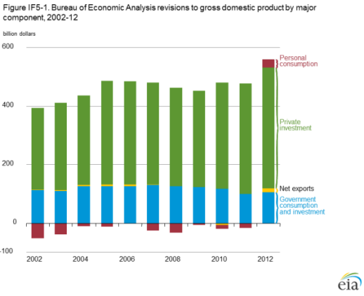
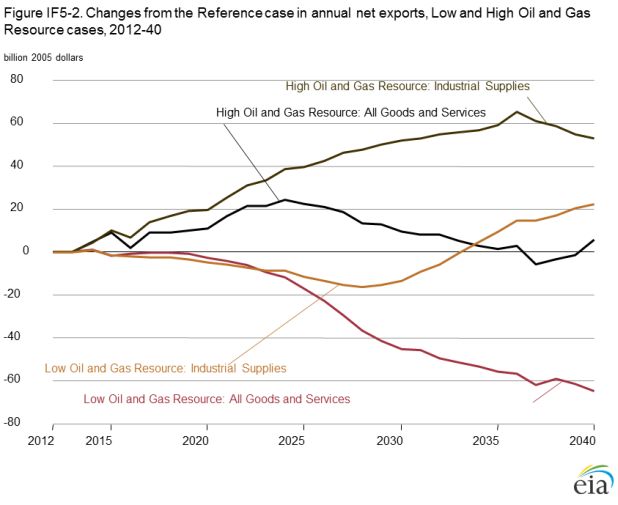
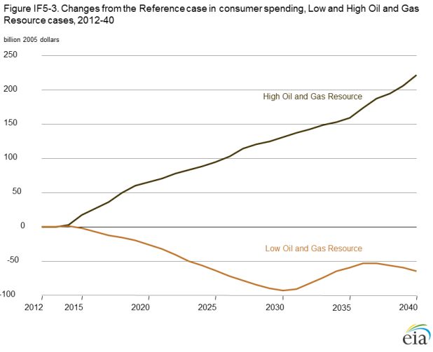
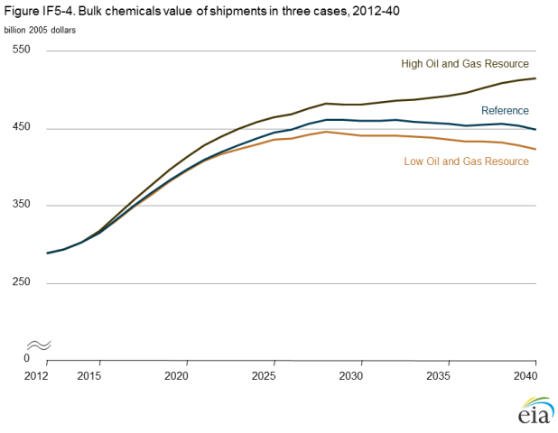
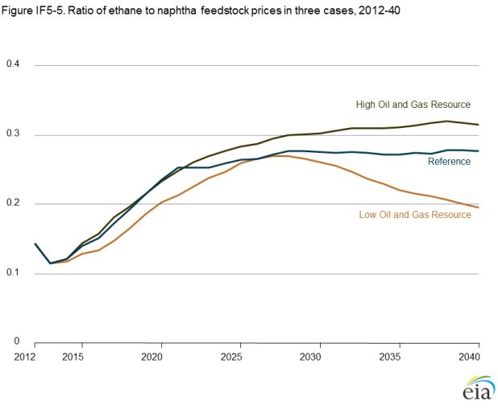
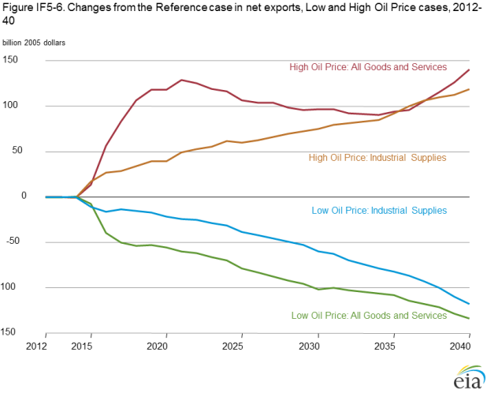
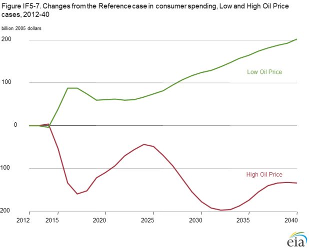
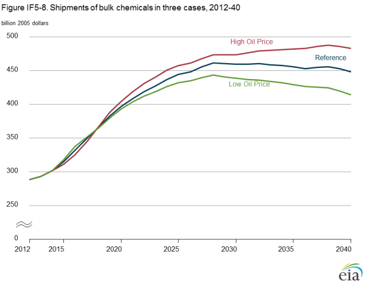
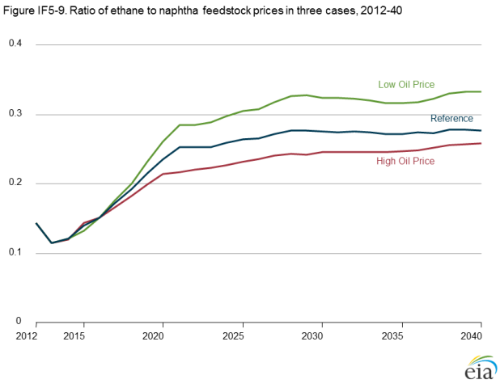

Effects of lower natural gas prices on projected industrial production
Release Date: 4/23/14
This analysis focuses on variation in industrial output in the Low and High Oil Price cases and Low and High Oil and Gas Resource cases compared to the Annual Energy Outlook 2014 (AEO2014) Reference case. Energy-intensive industries, including food, paper, bulk chemicals, glass, cement, iron and steel, and aluminum, are the industries that use the largest amount of energy per unit of output and are the most sensitive to natural gas prices. Of these, the most natural gas-intensive industries are food, paper, bulk chemicals, and glass [1].
Analysis of the industrial sector as a whole reveals strong links between natural gas prices and industrial production [2]. Further
analyses reveal important data issues and indicate some basic sensitivity to natural gas prices for the most energy-intensive
industries, subject to trade competition, when they are disaggregated [3, 4]. Those studies show evidence of a straightforward
production decline when natural gas prices to the bulk chemicals industry increase, but the relationship does not appear to apply
to the less natural gas-intensive cement industry. The same studies point to an important role for demand, both foreign and
domestic, for all industries, including the energy-intensive industries. The National Energy Modeling System used to produce
AEO2014 includes sufficient disaggregation to support analysis of the influence of natural gas prices on industrial output.
Demand categories
Expenditure categories, such as personal consumption, investment, government spending, and trade, measure underlying demand in the U.S. economy. Each category includes more detailed disaggregation, such as durable and nondurable goods. The AEO2014 industrial output projections use 59 different categories of final demand, with the effects of each category on industrial production differing across industries. The most important final demand categories for the industries analyzed here, according to input-output tables from the Commerce Department's Bureau of Economic Analysis (BEA) [5], are consumer spending, trade, and investment (see Impact of Bureau of Economic Analysis revisions on the National Income and Product Accounts). In addition to demand from domestic consumers and trade, interindustry demand also affects the industrial sector.
Impact of Bureau of Economic Analysis revisions on the National Income and Product Accounts
BEA performs comprehensive National Income and Product Accounts (NIPA) revisions approximately every five years. The 2013 release was its 14th comprehensive revision. The previous release was in July 2009. The BEA comprehensive revisions incorporate changes in the methods used to measure the U.S. economy as well as the most up-to-date, most complete, and most accurate source data available. Changes in NIPA definitions, classifications, and presentations as a result of the 2013 comprehensive revision include:.
- Capitalization of expenditures on research and development (R&D)
- Capitalization of expenditures on entertainment, literary, and artistic originals
- Addition of intellectual property products to the fixed investment tables, including R&D; entertainment, literary, and artistic originals; and software
- Accrual treatment of defined benefit pension plan transactions, recognizing the costs of unfunded liabilities
- Expanded set of ownership transfer costs for residential fixed assets
- Change of the reference year for price indexes and inflation-adjusted series.
The AEO2014 Reference case and High and Low Economic Growth cases started with the IHS Global Insight U.S. long-term model simulations available in March and June 2013, which do not reflect the latest comprehensive NIPA revisions for two reasons. First, the July 2013 NIPA revisions were issued late in the AEO preparation cycle. The late issuance of the NIPA revisions delayed the September and October releases of the IHS Global Insight U.S. long-term model simulations, normally used in preparation of the U.S. Energy Information Administration's (EIA) Annual Energy Outlook (AEO). Second, EIA uses the economic forecast together with interindustry data describing how each industry uses other industries’ output, and how each industry satisfies its final demand components [6]. BEA released the updated interindustry tables in December 2013, much too late for the AEO. While the comprehensive NIPA revisions affect past and projected estimates of GDP, they are not expected to materially affect projected energy use. The results of the 2013 NIPA comprehensive revisions will be included in EIA’s Annual Energy Outlook 2015.
Although the 2013 comprehensive NIPA revision did not lead to changes in broad economic trends or in the general patterns of past business cycles, it did increase gross domestic product (GDP) in every year back to 1929. The average annual growth rate of real GDP from 1929 to 2012 was revised upward to 3.3%, as compared with the previous estimate of 3.2%. More recently, the annual growth rate from 2002 to 2012 was revised upward to 1.8%, as compared with the previous estimate of 1.6%. The economic recession of 2007-09 (December 2007 to June 2009) now looks less severe than previously reported—with GDP contracting by 2.9% over that period after the comprehensive revision, compared with 3.2% before the revision. In addition, the current recovery is stronger than first reported—a 2.2% average annual expansion from the second quarter of 2009 through the first quarter of 2013, compared with 2.1% before the revision. The revised data also indicate that the economy shrank at an average annual rate of 1.3% in the first quarter of 2011, compared with 0.1% growth before the revision.
Changes in 2012 nominal GDP as a result of the comprehensive revision total $559.8 billion, including $526 billion (94%) attributable to changes in definitions and $33.8 billion (6%) resulting from statistical changes. Research and development capitalization accounts for 75% of definitional changes, or $396.7 billion. Two-thirds of R&D expenditures are made by the private sector and one-third by government. The remaining changes to definitions include capitalization of entertainment, literary, and artistic originals ($74.3 billion, or 14%); an expanded set of ownership transfer costs for residential fixed assets ($42.3 billion, or 8%); and accrual accounting for defined benefit pension programs ($12.6 billion, or 2%).
Figure IF5-1 shows the annual impacts of the NIPA revisions on the major components of GDP from 2002 to 2012. Private investment and government expenditures accounted for 92% of the $560 billion upward revision in 2012, primarily as a result of the capitalization of R&D expenditures. Revisions to gross private domestic investment contributed $413 billion, or 74% of the total; revisions to government expenditures contributed $104 billion, or 19% of the total; and revisions to personal consumption and net exports contributed $43 billion, or 7% of the total upward revision to 2012 GDP.

figure data
The increase in private and government investment spending is primarily the result of BEA's continued work to broaden the definition of GDP. With this comprehensive revision, NIPA now includes capitalization of spending on R&D and on long-lived artwork produced by artists, studios, and publishers—intangible assets that previously were considered intermediate inputs to the production of other goods or services. Although the inclusion of intangible assets does raise the measured level of overall economic activity, it has only a modest impact on economic growth rates.
Alternate cases
Results
Oil and Gas Resource cases
Changes in the assumed size of the U.S. oil and natural gas resource base and the rate of technology advance within the sector
can affect the nation's economy. In general, increases in oil and natural gas resources result in lower prices and higher industrial
output, and a smaller oil and natural gas resource base results in higher prices and lower industrial output. However, the cases
are not symmetric. In the High Oil and Gas Resource case, GDP is 1.2% higher in 2040 than projected in the Reference case, total
industrial output is 5.1% higher in 2040, and bulk chemicals and paper industries output is 11.5% higher in 2040, as a result of
improved trade advantages resulting from lower prices. The
changes tend to be smaller in the Low Oil and Gas Resource
case. GDP is 0.4% lower in 2040 than projected in the
Reference case, total industrial output is 2.3% lower in 2040,
and bulk chemicals and paper industries output is 5.0% lower
in 2040, as a result of lower oil and natural gas production
and higher prices in the Low Oil and Gas Resource case.
Among the final demand categories, trade of industrial supplies
(Figure IF5-2) and consumer goods (Figure IF5-3) show the
largest differences across the Oil and Gas Resource cases.
Energy trade is a major component of industrial supplies. Trade
of industrial supplies and consumer goods drives production in
the bulk chemicals industry (Figure IF5-4). The price advantage
of natural gas-based feedstock varies widely in the High Oil and
Gas Resource case (Figure IF5-5), with corresponding impacts
on the bulk chemicals industry. Differences in production of
bulk chemicals account for a large portion of the differences
in fuel consumption results, particularly for petroleum and
other liquids and for natural gas, both of which are used as
feedstocks in the bulk chemicals industry.

figure data

figure data

figure data

figure data
In the High Oil and Gas Resource case, exports of all goods and services from 2012 to 2025 grow faster than imports, as a result of lower U.S. producer prices [7] that are attributable in part to lower natural gas prices (see Figure IF5-2). After 2025, the growth rate of imports begins to increase. Net exports of industrial supplies continue to grow throughout the projection in the High Oil and Gas Resource case, because energy imports are low. In the Low Oil and Gas Resource case, net exports of all goods and services decline through 2040, primarily as a result of slow export growth when U.S. producer prices are higher than those in the Reference case. Net exports of industrial supplies in the Low Oil and Gas Resource case are lower than in the Reference case until 2034, when nonenergy imports drop below Reference case levels as U.S. producer price inflation slows.
oil price case
In comparison with the Reference case, the Low Oil Price case shows lower natural gas prices andproduction, and the High Oil price case shows higher natural gas prices and production. However, the magnitude of the changes in the Oil Price cases is smaller than in the Oil and Gas Resource cases. The changes in natural gas prices in the Low Oil Price case affect the economy earlier in the projection, leading to changes in inflation, unemployment, and interest rates. In the High Oil Price case, the economy shows larger losses beginning earlier than in the Low Oil and Gas Resource case but recovers as natural gas production expands.
In both the Low and High Oil Price cases, the largest changes from the Reference case are for trade in industrial supplies (Figure IF5-6) and consumer goods (Figure IF5-7), which primarily affect the bulk chemicals, glass, and paper industries. Differences in consumer spending affect output in the glass and paper industries, which are tightly linked to consumer goods and more closely tied to demand for capital goods than is the bulk chemicals industry. Fuel consumption trends in the Low and High Oil Price cases differ from those in the Low and High Oil and Gas Resource cases, primarily because of the bulk chemicals industry. The initial response of the bulk chemicals industry to higher oil prices compared with the Reference case is a decrease in output (Figure IF5-8), and the initial response to lower oil prices is an increase in output, which does not occur in the High and Low Oil and Gas Resource cases (see Figure IF5-4). In the High Oil Price case, oil prices grow faster than the prices of natural gas-based feedstocks, leading to a price advantage for natural gas feedstocks (Figure IF5-9). As a result, bulk chemicals output in the High Oil Price case in 2040 is higher than in the Reference case. In the Low Oil Price case, with natural gas prices increasing more than oil prices, bulk chemicals output remains below the Reference case level in 2040.

figure data

figure data

figure data

figure data
Endnotes
- U.S. Energy Information Administration, 2010 Manufacturing Energy Consumption Survey (MECS), http://www.eia.gov/consumption/manufacturing/index.cfm.
- V. Arora and J. Lieskovsky, "Natural gas and U.S. economic activity," The Energy Journal (forthcoming, 2014).
- E. Sendich, "The importance of natural gas in the industrial sector with a focus on energy-intensive industries," EIA Discussion Paper (February 28, 2014), http://www.eia.gov/discussionpapers/?src=bookshelf.
- V. Arora and E. Sendich, "Natural gas and U.S. industrial production: a closer look at four industries" (unpublished).
- Bureau of Economic Analysis, Industry Accounts, http://bea.gov/industry/index.htm#annual.
- For a more detailed description of the interindustry data changes, see "Benchmark input-output account of the U.S. economy, 2007" (December 18, 2013), http://www.bea.gov/newsreleases/industry/io/ionewsrelease.htm.
- The producer price index, used to capture the selling prices received by domestic producers for their output, represents the price paid by industrial sector purchasers for inputs.
Comments
Read what others are saying …
Be the first to comment!